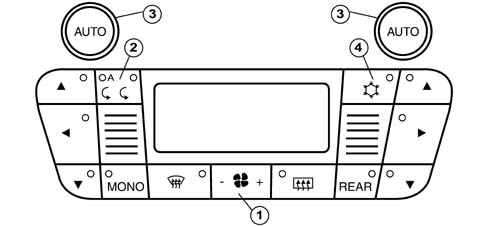

5040A Air conditioning system operational check (temperature)
- Path
- Test > 50 auxiliary units > 5040 AIR CONDITIONING CASING AND COMPONENTS > 5040A Air conditioning system operational check (temperature)
- Kind
- test / check procedure
- Applies to
- all engines; all production periods
- Interactive page
- https://sloeber94.github.io/elrnDB-lThss/en/#/72116
Applies to: all engines; all production periods
Open the ventilation vent flaps (in the dashboard) and insert a thermometer (or suitable tool) about 3 mm into the centre vent through the fins.
Close the doors and windows.
Start up the engine and keep it idling, with the air conditioning system switched off (button 1 pressed for at least 1.5 seconds on the air flow rate decrease control side.
Switch off the recirculation (button 2 with LEDs off)
Place the temperature selector in the MAX cold position (one of the 3 knobs turned in an anti-clockwise direction until LO appears on the two temperature displays). The system is automatically in the Mono and Vent position.
Switch off the air conditioning (LED in button 4 off).
Place the fan speed selector in the top speed position (button 1 pressed on the flow rate increase control side until 12 bars are shown on the centre display).
1 minute after the previous operations have been completed read the temperature T0 on the thermometer and make a note of it.
Check that it does not exceed the outside temperature TE by more than 5° C
Switch on the air conditioning (LED in button 4 off).
2 minutes after switching on the air conditioning, check that the temperature reading on the thermometer has decreased by at least 8° C compared with the initial value T0.
5 minutes after switching on the air conditioning, check that the temperature reading on the thermometer has decreased by at least 12° C compared with the initial value T0.
